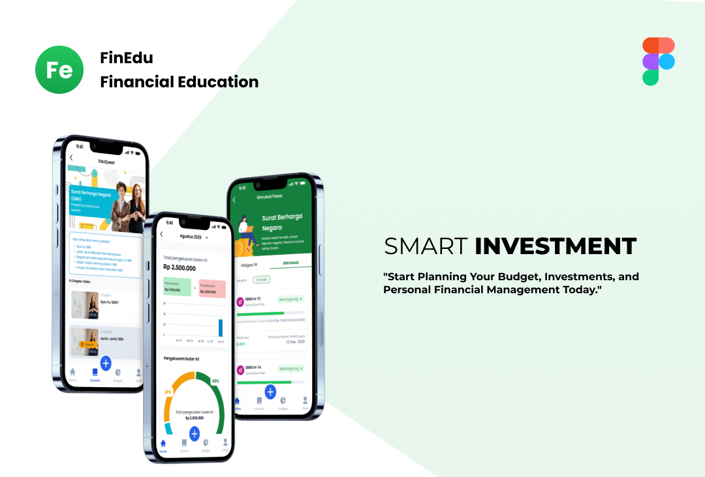
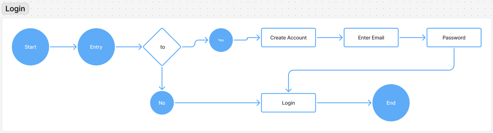
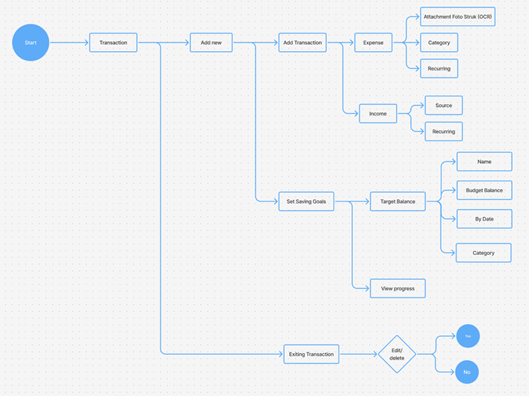
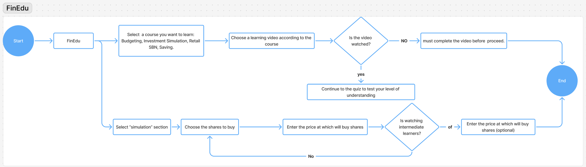
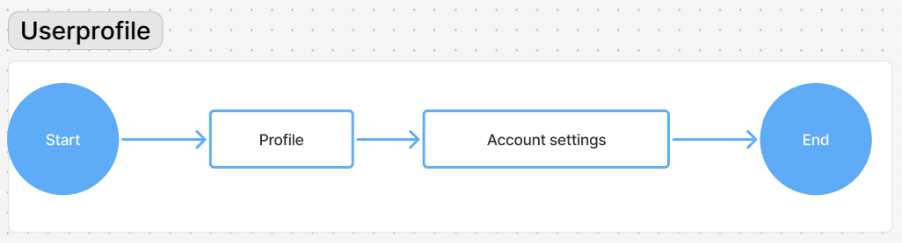

FinEdu – Financial Education: Financial Literacy for Personal
 Yoga Pratama
• Sep 2025
Yoga Pratama
• Sep 2025
FinEdu is an Financial Education: Financial Literacy for Personal that helps users plan trips, discover destinations, and manage itineraries with ease.
Disclaimer:This project is a personal case study and is not affiliated with any company. It was awarded 4th place in the UI/UX Competition at Politeknik Negeri Bali 2025.
Overview
FinEdu is an innovative application that is designed to improve personal financial literacy of both students and overall population and includes a budget planner, daily transaction tracking, savings goals, and financial reporting, thus, making it easy to develop systemic and wise financial habits. The choice of Investment Teaching about Fixed Rate Bonds (FR) and Retail Government Securities (SBN) was intentionally selected as it is considered to be safe, economical, accessible to novices, and helps to introduce low-risk investing as well as at the same time will aid the national development. Overall, FinEdu is an easy-to-use, interactive educational tool that can be used in conjunction with the financial inclusion initiatives in Indonesia, and it can be assumed that young generations of people will develop sound money-management principles, learn to be disciplined in their savings, and engage in responsible investment practices at a young age.
Main Objectives
- To help users in managing personal finances by allowing them to budget, record transactions and even save goals.
- To deliver safe and easy investor education on Fixed Rate Bonds and Retail Government Securities.
- To provide an interactive and easy to use interface that would make the study of financial concepts easier.
- To back the national financial literacy and inclusion initiatives by promoting early saving and investing trends.
Design Process
To solve this challenge, we use the design thinking process as an approach to solving the case

- Emphatize: Conduct user research to understand the needs, pain points, and expectations of users in planning their trips.
- Define: Identify and clearly define the main problems that the FinEdu application aims to solve based on user research findings.
- Ideate: Generate creative ideas for solutions that can address these problems effectively.
- Prototype:Develop an initial prototype of the application to gather user feedback.
- Testing: Conduct testing on the prototype to identify areas for improvement and refine the design.
User Flow
- User flow login: By opening the application, the end user is first guided to the interface of the login. At this point, the system will require confirmation of the presence of an account that existed before. In case the user has an existing account, he or she can authenticate by typing in his or her registered email address and password. On the other hand, when the user does not have a preexisting account, he/she must do some form of registration by entering a valid email address and a password before proceeding with the process of logging in. After an authentication: In case a returning user or a newly registered user gets a successful authentication, the system would automatically redirect the user to the principal dashboard. This dashboard provides access to the primary features of the application which include budgeting, investment planning and personal financial management. 
- Budget Planner: Budget Planner workflow is initiated when the user clicks the budget menu in the application. This is where the budget planning interface of the system is given and it lists all the budget entries previously instantiated. The user will have an option of making amendments or removing any existing entry. In case the user chooses to revise or delete a certain item, the process is considered to be finished when the revision or deletion is confirmed. The system brings the interaction to an end without further action in the case of no changes. In addition to the control of the existing entries, the user is given the functionality of making new budget allocations based on their financial categories and requirements. The flow allows the application to provide the management of the budget flexibility and user-friendly, thus supporting the effective planning of finances that would be aligned with the financial situation and goals of the user.
- Transactions:The flow of transactions starts when the user picks the menu of the Transaction. Originally, through this interface, users can add new transactions, whereby expenses are defined by category and recurrence data or income by source and scheduling data. In addition, the users are authorized to set the target savings by creating targets, time limits and applicable categories. Transactions that have already been captured are displayed, and as such, users can correct or delete entries when the need arises. Such a procedural framework encourages good monitoring of financialization and clearness of transaction, organizing and making transactions easy to monitor. 
- Financial Report:The user logs into the Financial Report menu of the application in order to get a full summary of his or her financial status. Based on this section, the user can access quick analytics, i.e. the ratio of income to expenses, monthly reports to identify the patterns of transactions, the entire budget picture, progress toward financial goals, and an all-inclusive list of expenses. The workflow provides a clear and methodical representation of the financial position thus allowing users to effectively keep track of their financial positions by the help of visual representation in form of charts and graphs.
- FinEdu:In the application, the user can access the FinEdu module and choose a thematic focus, which can be Budgeting, Investment Simulation, Retail Government Securities, or Saving. Before the user is allowed to proceed to the evaluation quiz, the user must watch the instructional video to the end. At the end of the quiz, the user gets to play an investment simulation, whereby they choose a stock, enter the purchase price, and, at their own discretion, may add other entries to the transaction as required by the exercise. This step-by-step process combines video information, quiz testing, and simulated activities to provide an interactive and comprehensive financial literacy learning process. In parallel, this design will ensure a twofold goal, namely, users will achieve the conceptual understanding and at the same time will prove the ability to implement such constructs in real financial situations. 
- User Profile:The Profile menu is chosen by the user within the application to view his or her profile page, which contains personal data and other vital data of the account. It is with this interface that the user can go to the account settings and change personal details or modify the password, or change personal preferences or administer the account security. After the changes are verified and saved, the process is done and the user is brought back to the application with the updated account information. The flow provides an easy and safe route on which the management of the digital identity flows smoothly. 


Wireframe
- A wireframe is a diagrammatic representation of the interface of an application or a web site that defines the structure of a page and the locations of the key elements of it, such as button, menu, image, and text elements, without specifying their actual visual appearance. The major focus is made on layout, functionality and inter-page interactions, and thus helping in the best user experience.
- A wireframe aims to provide a conceptual frame of early developers, designers, and stakeholders, explaining the logic of application operation and what sort of interaction with the application is expected. This initial step therefore facilitates effective discussion, evaluation and optimization in the sense that the representation is not bound to visual details, and so further design and development stages are faster.
- In the FinEdu application, the wireframe serves as a blueprint that can be used as the guide to the flow and interface design. It then gets converted into an interactive prototype and finally to the final product, thus making sure there is a more efficient and orderly course of development.
- Mockup Home and profile,The FinEdu mockup Home page acts as a central point of activity and has real-time financial summaries like total balance, remaining funds and income-expense comparisons. The interface consists of quick-access icons regarding such features as Financial Goals, Retail Government Securities, Fixed-Rate Bonds (FR), FinEdu Learning, Reports, Budget Setup, and central access to Expense input, as well as news about current financial literacy activities. There is a bottom-bar that offers Navigation with the help of Home, Education, Budget, and Profile and a central plus (+) button that allows the addition of transactions. The Profile page allows managing personal information with such features as Edit Profile with editable fields that include email, name, gender, phone number and address and a Save button, Change Password with security settings, and other helpldowns such as Privacy Policy, FAQ, and Contact Us.
- Investment Simulation mockup of the FinEdu application provides a pedagogical experience, which is an interactive one, and intended to explain the mechanics of investing in Retail Government Securities (SBN Ratel), and Fixed Rate (FR) Bonds. The process will start by choosing an investment tool, where the users can view relevant details including available quota, offering term, yield, tenor and payment method. Then, users have access to detailed information, such as serial numbers, nominal values, remaining quota, and estimated returns. Continuing the working process, a confirmation of purchase step follows that presupposes users inputting the size of investment, providing the transaction with a Personal Identification Number (PIN) as the security measure, and reviewing the summary of the order and payment status after the completion. There is also the FR Bond option which uses a moving price fluctuation chart, which is affordable giving the users the ability to view market movement over time. This simulation reflects the actual investment environment since it combines both the theoretical framework and hands-on experience thus allowing the user to gain a comprehensive experience of risk, returns and markets in a realistic learning environment.
- FinEdu (EduQuest) mockup is an interactive educational module that aims to encourage financial literacy, specifically, Retail Government Securities (SBN) and the basics of financial management. The learning cycle begins on the main learning screen, where the results of their daily learning will be tracked, and they will be able to access the content divided into thematic groups, i.e., Budgeting and Investment Simulation. Instructional videos are used to spread educational content addressing such topics as the basics of SBN, the taxonomy of instruments, attendant benefits, and mechanics. After watching the video piece, the participants proceed to interactive multiple-choice test to show the progress (example, question 1 of 3 displayed). The assessment tool analyzes the understanding of fundamental concepts in the form of SBN issuers, instruments classification, and the secondary market working process. At the end of the assessment, the site shows the final result, outlines right and wrong answers and offers a detailed explanatory commentary. This learning structure incorporates an instructional video material, formative quizzes, and real-time feedback systems, which enables an interactive, measurable learning experience, which sustains significant financial literacy outcomes.
- Budgeting mock- up helps in managing the budgets, income and expenditures systematically. Its main interface shows an overview of monthly expenditure, a percentage-based comparison chart of the income and expenses, and the section that allows entering new transactions, including the title, date, category, and description. Categorical budget restrictions can also be created by the user, such as food, travel, housing, and education, which allow calculating the overall allocations, tracking left-over balances and receiving status notices (e.g., you are on track or over budget). Besides, an OCR-based receipt-scanning feature will allow recording transactions automatically, which will eliminate the need to enter the data manually. All of those aspects together provide a holistic budgeting experience, which facilitates tracking, pattern recognition, and optimization of monthly financial planning in a user-friendly, efficient, and accurate way.
- The Target mockup, helps the users to plan and track financial targets in an orderly way. The main interface will allow the creation of the new goals by choosing a relevant category, e.g., an investment, giving it a specific name, e.g., Purchase FR0066 Bond, and entering the desired amount of money and the date when it should be completed. The aggregate savings are portrayed by visual reports of progress compared to the final goal. One of the Savings History features is an archival record of any transactions, allowing deposits to be done incrementally and allowing choices to be made to edit or delete goals, thus allowing flexibilities to the changing fiscal conditions. In turn, this design has the characteristics of a pragmatic, transparent, and measurable tool, which can be used to promote progressive tracking and promote predictability of the achievement of financial objectives.
- Create Itinerary,The Report mock up provides a monthly financial account in a format that is easy to read and understand, and it shows the remaining balance of this month and a bar chart of income versus expenses. The interface uses three major tabs, namely, Transactions, where there are detailed records, classified by classification, date, and monetary value; Budget, where available remaining and total allocations with the achievement percentages are displayed; and Target, which illustrates the progress made towards financial objectives and allows changes. This is an aspect that helps the user to track the daily cash flow, evaluate budget efficiency and real time progress toward a savings or investment goal. On the whole, the design can be characterized as a complex and transparent assessment center, helping a user to understand his/her financial situation and make informed decisions.


Mockup